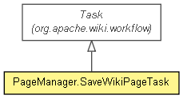

org.apache.wiki
Class PageManager.SaveWikiPageTask
java.lang.Object
 org.apache.wiki.workflow.AbstractStep
org.apache.wiki.workflow.Task
org.apache.wiki.PageManager.SaveWikiPageTask
org.apache.wiki.workflow.AbstractStep
org.apache.wiki.workflow.Task
org.apache.wiki.PageManager.SaveWikiPageTask
- All Implemented Interfaces:
- Serializable, Step
- Enclosing class:
- PageManager
public static class PageManager.SaveWikiPageTask
- extends Task

Inner class that handles the actual page save and post-save actions. Instances
of this class are assumed to have been added to an approval workflow via
WorkflowBuilder.buildApprovalWorkflow(Principal, String, Task, String, org.apache.wiki.workflow.Fact[], Task, String);
they will not function correctly otherwise.
- See Also:
- Serialized Form
| Methods inherited from class org.apache.wiki.workflow.AbstractStep |
addError, addSuccessor, getAvailableOutcomes, getEndTime, getErrors, getMessageArguments, getMessageKey, getOutcome, getOwner, getStartTime, getSuccessor, getWorkflow, isCompleted, isStarted, setOutcome, setWorkflow, start |
| Methods inherited from class java.lang.Object |
clone, equals, finalize, getClass, hashCode, notify, notifyAll, toString, wait, wait, wait |
PageManager.SaveWikiPageTask
public PageManager.SaveWikiPageTask()
- Creates the Task.
execute
public Outcome execute()
throws WikiException
Executes the processing for this Step and returns an Outcome indicating
if it succeeded (Outcome.STEP_COMPLETE or
Outcome.STEP_ABORT). Processing instructions can do just about
anything, such as executing custom business logic or changing the Step's
final outcome via Step.setOutcome(Outcome). A return value of
STEP_COMPLETE indicates that the instructions executed completely,
without errors; STEP_ABORT indicates that the Step and its
parent Workflow should be aborted (that is, fail silently without error).
If the execution step encounters any errors, it should throw a
WikiException or a subclass.
Note that successful execution of this methods does not necessarily mean
that the Step is considered "complete"; rather, it just means that it has
executed. Therefore, it is possible that execute could run
multiple times.
- Specified by:
execute in interface Step- Specified by:
execute in class AbstractStep
- Returns:
- the result of the Step, expressed as an Outcome
- Throws:
WikiException - if the step encounters errors while executing
Copyright © {inceptionYear}-2014 The Apache Software Foundation. All rights reserved.